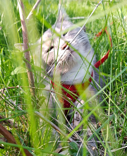
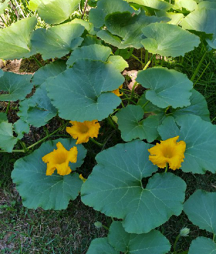
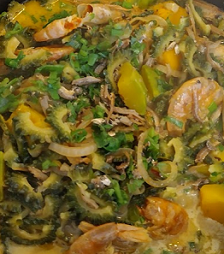

My name is Claire. And yellow is my favorite color. Hence, I just made up a silly title for my personal website as "Yellow C". It has nothing much of an in-depth meaning. It just came up as a tiny bulb in my little brain to name it after my favorite color and my first name's first letter. Just as plain as that. And yeah, I have a cat!

My cat loves sniffing grasses.
Katzilla
a.k.a "fat and ugly" cat
My name is Katzilla. I love to go outside and sniff fresh green grasses. And I eat them too! They taste so good, I promise. I love organic stuff. Other than that, I also like to eat fruit-flavored yogurt. I don't eat that much but they say I am fat and ugly. Whatever! I scratch and pounce on them whenever I can anyway just for fun and entertainment! Peace humans! Feed me some yogurt please...

Calabaza (Squash)
Gardening
Flowers and veggies
I have some few flowers and veggies like sunflower, black eyed susan, squash, tomatatoes, peppers, okra, eggplant, lemon grass, corn, garlic, onions, and some few others. I just have to deal with wild animals messing up with the plants every now and then. Sometimes, they take it all when I'm not too quick to get my share.

Mixed Veggie Curry with coconut milk.
Cooking
Anything hot, spicy and peppery
I enjoy cooking too. I love food which are spicy, a little hot but not too hot that I couldn't eat it at all. I always add extra spices to my dishes so it would fit my taste. I also love to experiment on how to spice up what I cook like mixing up some other spices together and see how it improves the taste (or sometimes I ruin it too, lol!). But overall, cooking is fun and entertaining!